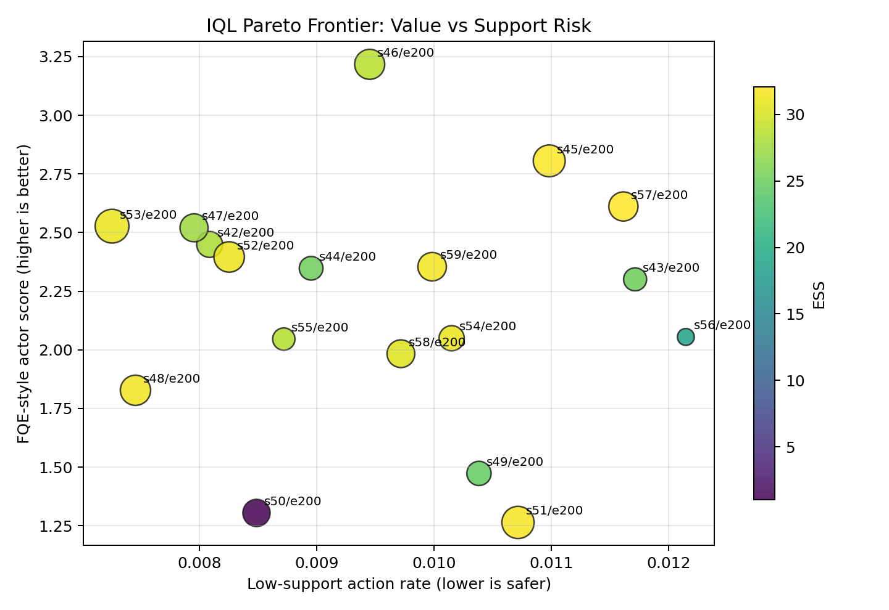
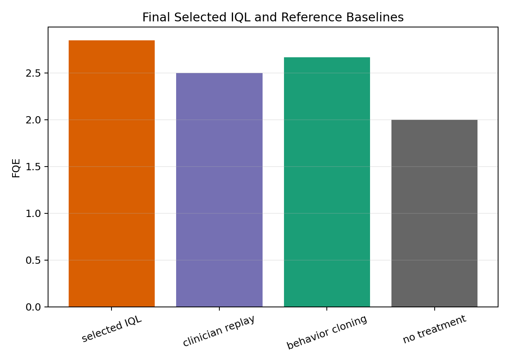
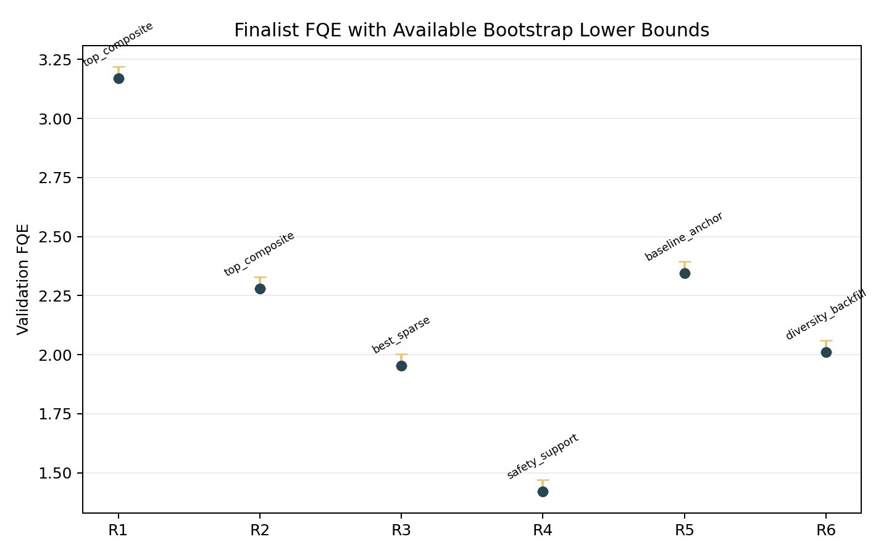

Sepsis karar analitiği ve çevrimdışı RL zorunluluğu
Bu çalışma klinisyenleri yenme iddiası değil; veri desteği sınırlı klinik koşullarda güvenli ve sızıntısız retrospektif politika değerlendirme protokolüdür.
Modelden önce veri sözleşmesi kilitlenir.
62 boyutlu durum, 25 aksiyonlu tedavi gridi ve ön tarama denetimi; yapay başarı üreten split, preprocessing ve outcome leakage risklerini eğitim başlamadan bloke eder.
Neden CQL değil, IQL?
CQL veri dışı aksiyonları cezalandırır; fakat nadir ve hayat kurtarıcı rescue therapy örneklerini aşırı bastırma riski taşır. IQL hiç görülmemiş aksiyonu sorgulamaz; radikal keşiften vazgeçer, destek içinde kalmayı seçer.
CQL riski
Ceza katsayısı fazla seçilirse seyrek ama kritik klinik müdahaleler değersizleşebilir.
IQL tercihi
Veri kümesi dışındaki hiçbir aksiyon maksimize edilmez veya yapay değerlenmez.
Klinik takas
Mucizevi yeni doz keşfi yok; tarihsel destek dışına kaçış riski minimize edilir.
Ana mesaj
Güvenlik, performans iddiasından önce gelir.
Kazanan: SOFA konservatif güvenli IQL.
Aşama 1'de 18 konfigürasyon tarandı; Aşama 2'de 6 finalist 3 farklı tohumla tekrar değerlendirildi. Final seçim tek metrikten değil, FQE/WIS/ESS/destek/uyum bileşiminden geldi.

Yüksek skor, düşük ESS ile illüzyona dönüşür.
- FQE yalnız yeterli davranışsal destek kütlesiyle anlamlıdır.
- Davranış klonlama WIS=9.194 görünür; ESS=1.6 olduğu için geçersizdir.
- Seçili IQL klinisyenle %41.4 tam-kutu uyum gösterir.
- Desteklenmeyen aksiyon sapması yalnızca %0.9 düzeyinde kalır.

ESS engeli klinik üstünlük iddiasını durdurur.
ESS=29.410, güvenilirlik eşiği olan 50'nin altındadır. Bu nedenle sonuçlar prospektif klinik üstünlük değil; sınırlı varyans altında dürüstçe raporlanan retrospektif OPE kanıtıdır.
POMDP gerçeği
Yoğun bakımda hekimin yatak başı sezgisi ve kontrendikasyonlar tam gözlenemez.
Dürüst sınır
Model tedavi önerisi değildir; güvenli değerlendirme protokolüdür.

Dinamik güvenlik katmanlarıyla daha güvenilir klinik RL.
Sonraki hedef daha büyük grid değil; belirsizlik, klinik kılavuz ve çalışma zamanı filtrelerini politika güncelleme mekanizmasına eklemek.
Dinamik ekspektil
Yoğun destekte agresif iyileştirme, seyrek bölgede davranış klonlamaya yakın kalibrasyon.
Runtime safety filter
Surviving Sepsis Campaign ihlallerini canlı akışta bloke eden koruyucu katman.
Çok adımlı izler
Peng Q(λ) ile terminal ödül sinyalini yörünge boyunca daha hızlı yayma.
Metodolojik katkı
Yatak başı öneri değil; sızdırmaz retrospektif değerlendirme standardı.